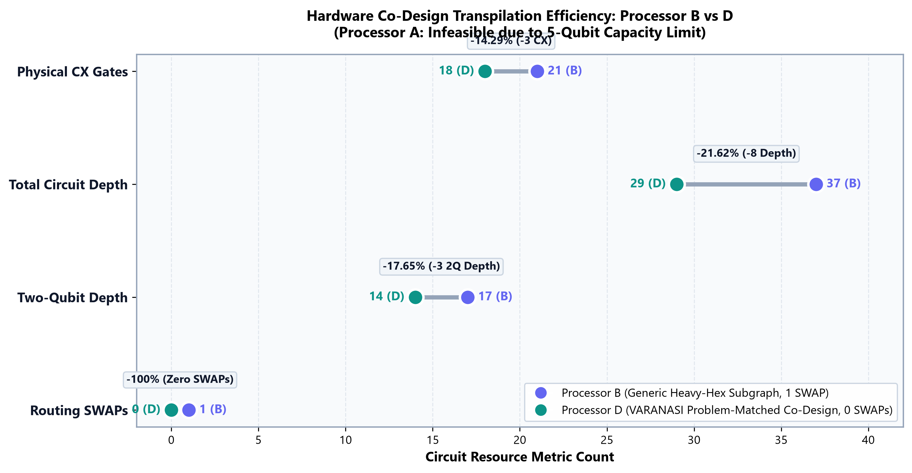
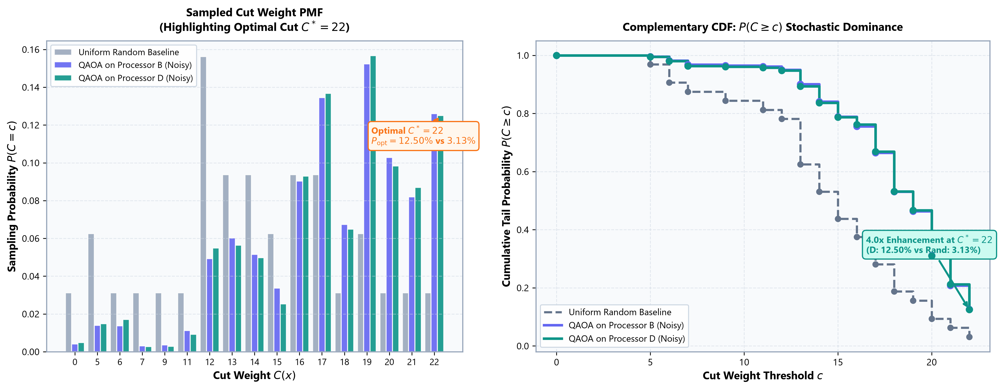
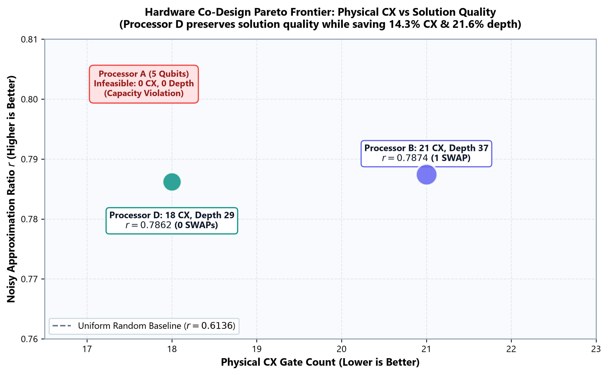

In dense cellular networks (such as 5G microcells and university campus layouts), adjacent cell towers transmitting on overlapping radio frequencies create mutual co-channel interference. This degrades the Signal-to-Interference-plus-Noise Ratio (SINR) and causes packet drops. Telecommunication engineers must partition base stations across available orthogonal frequency bands to isolate interference.
1. Physical Entities & Interference Graph
The 6 communication towers form vertices $V=\{0..5\}$. The 9 weighted links represent interference severity $w_{uv}$ incurred if both towers share a frequency band. Total interference penalty = 27.
2. Two-Channel Max-Cut Formulation
We allocate Channel $A$ ($x_i=1$) and Channel $B$ ($x_i=0$). Maximizing cut weight isolates neighboring towers onto orthogonal frequencies, eliminating 81.48% (22/27) of mutual interference.
3. Illustrative Mapping Scope & Caution
Scientific Disclosure: This scenario provides a conceptual domain interpretation for the locked PS-O1 instance. Commercial radio planning requires multi-channel coloring ($K > 2$) and dynamic power control.
In emergency logistics, selecting high-priority medical and relief supplies subject to strict vehicle payload limits represents a 0-1 Knapsack problem. In accordance with the challenge guidelines, this exploratory problem is provided in a dedicated station to demonstrate how QUBO slack variables encode capacity constraints without altering the primary PS-O1 benchmark.
Element Inspector
| Idx | Logical Assignment $(x_0..x_5)$ | Qiskit Bitstring | Cut Weight | Ratio ($C/C^*$) | Status |
|---|
• State 11: (0, 0, 1, 0, 1, 1) -> S={2,4,5}, S'={0,1,3}
On a 6-variable problem, classical search requires only 64 evaluations (< 1 ms). This confirms the ground truth reference with zero mathematical doubt before deploying quantum circuits.
Interactive Variational Parameter Tuner
Exact 2D Parameter Landscape Map
Traced Interaction: Edge (0, 2) [Weight = 1]
Hamiltonian Operator Term: $\frac{1}{2}(I - Z_0 Z_2)$. Gate Unitary Block: $\text{CX}(0, 2) \to R_Z(1 \cdot \gamma) \to \text{CX}(0, 2)$. Directly embedded on Processor D with zero SWAP routing overhead.
Processor B (9 Qubits, Generic Grid)
1 SWAP RequiredLacks a direct coupling edge between physical qubits corresponding to logical edge $(1, 4)$. The transpiler inserts 1 SWAP (+3 CX gates), inflating CX count to 21 and depth to 37.
Processor D (9 Qubits, VARANASI Co-Design)
0 SWAPs (Optimal)Natively embeds all 9 PS-O1 interaction edges on nodes 0–5 with a degree-4 ancillary ring on 6–8. Zero routing SWAPs required, compiling with theoretical minimum 18 CX gates.
Connected-Dot Hardware Resource Reduction (Dumbbell Plot)

Input Graph Ingestion & Validation
Parses locked 6-node instance from data/instance.json. SHA-256 integrity verification.
Exhaustive Classical Enumeration
Evaluates all 64 bit assignments to establish exact ground truth ($C^* = 22$).
Parameterized QAOA Circuit Construction
Synthesizes cost unitary from graph edges and mixer rotations using basis ['rz', 'sx', 'x', 'cx'].
COBYLA Classical Parameter Updates
Multi-seed optimization across seeds 0..4 converging to $(\gamma^*, \beta^*) = (-0.1680, 0.3327)$.
Processor Coupling & Transpilation
Maps logical circuits onto Processor B (1 SWAP) and Processor D (0 SWAPs, SABRE level 1).
Hardware Noise Modeling
Injects official depolarizing rates ($p_1=0.001, p_2=0.005$) and readout bit-flip noise ($p=0.01$).
Quantum Measurement Sampling (4,096 Shots)
Executes AerSimulator at seed 42 to collect discrete 64-bitstring shot histograms.
Statistical Provenance & Decoding
Decodes via counts_to_x(), verifies $P_{\text{opt}} = 12.50\%$ (4.0x random), and writes qaoa_counts.json.


Click items below to toggle them into the payload. The panel calculates total weight, value, and constraint feasibility in real time, comparing with the exact classical optimum:
📊 Presentation Slide Deck
16:9 dark-slate publication pitch deck with embedded high-res scientific figures and backup defense slides.
📦 Submission ZIP Package
Audited clean package with top-level VARANASI_PROJECTQ/ root, SHA-256 manifests, and 0 bytecode.
📑 Official Benchmark Tables
Validated CSV tables containing QAOA cross-processor metrics and Bell state tomography fidelities.